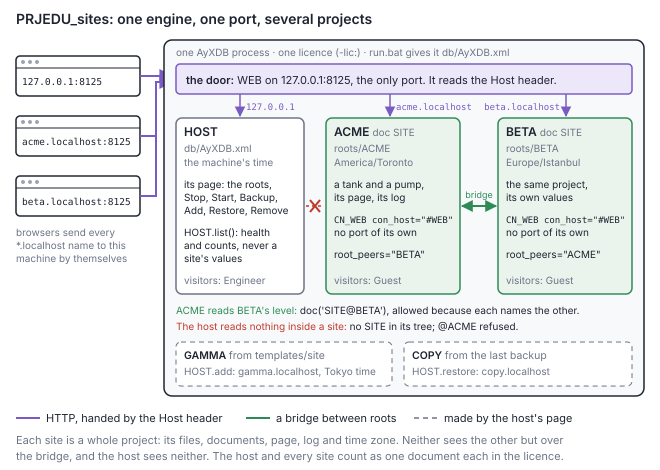

The roots
HOST.list(): a summary, never a root's values| root | its page | running | health | docs | cons | threads | sessions | FAIL / PANIC |
|---|
One process, one port. Each page link has the same port and another name: the door reads the
Host header and hands the request to the root whose root_host it is. Stop a root and
its page says so; start it and the page goes on where the tank was.What the host gets from inside a root
doc('SITE')/id('LEVEL')/@val | -- |
doc('*')/id('LEVEL')/@val | -- |
doc('SITE@ACME')/id('LEVEL')/@val | -- |
Every root has a document called SITE with a LEVEL in it. None of them is in the host's tree:
the star finds the host's own document and stops. ACME's
root_peers does not name the host, so
the bridge is refused too.What the buttons did the host's log has the same lines, and when each background job ended
--
Last backup:
none yetHow it works a sketch; click for full size
